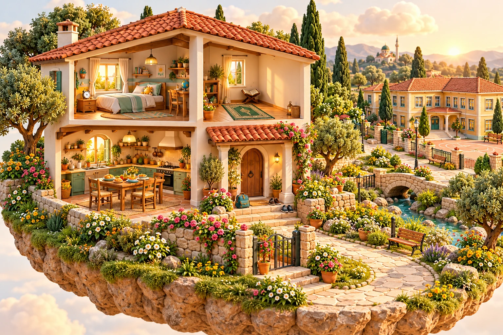
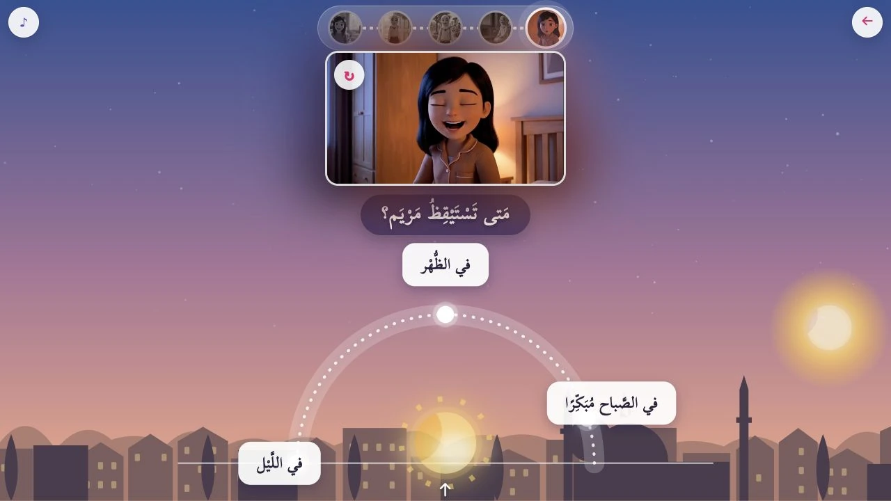
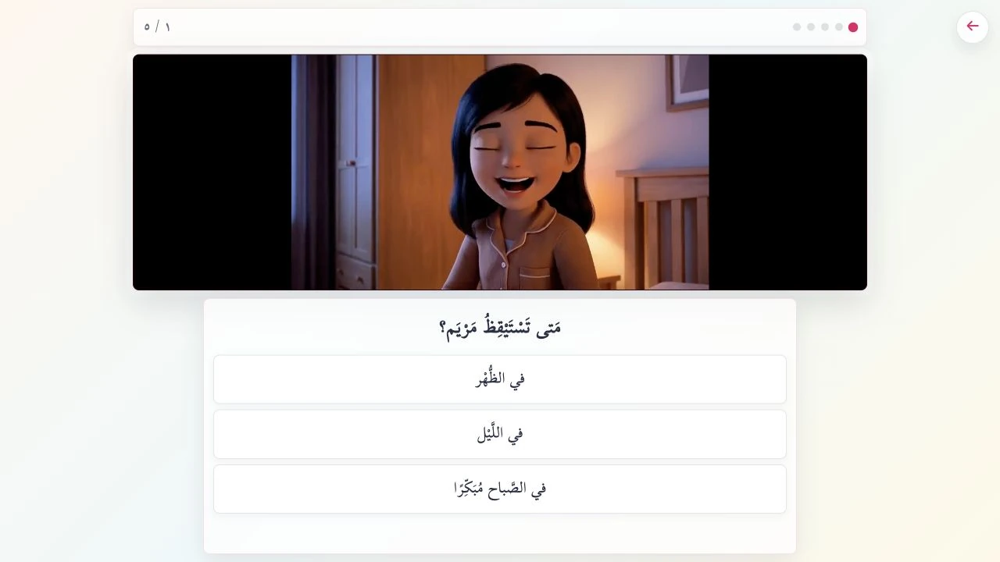

اِلْمَسِ الأَماكِنَ في الصُّوَرِ، وَصِلِ العِباراتِ، وَرَتِّبِ الحِكايَة.

حَرِّكِ الشَّمْسَ، وَاخْتَرِ المَكانَ، وَتَسابَقْ مَعَ صَديق.

شاهِدِ الفِيديو، وَاخْتَرِ الإِجابَةَ، وَاسْتَمِعْ إِلى الجَواب.